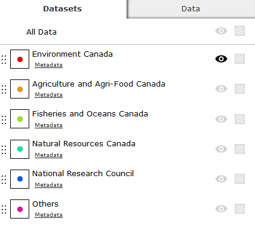
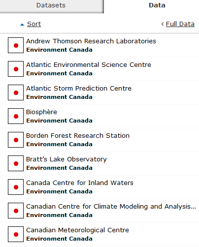
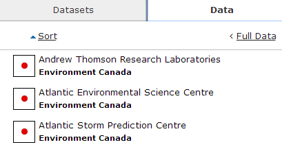
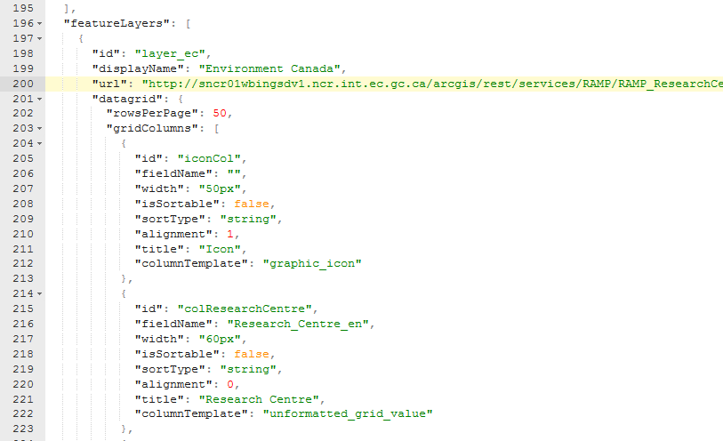

RAMP Quick Start Guide
Welcome to RAMP Quick Start Guide. In this guide, we will be showing you how to setup your own web map using RAMP. View live sample
Requirements
This guide assumes you have downloaded the RAMP source from Github, and have run the Grunt build script. If not, please visit the Getting Started page to get your environment setup.
Map resources
We will be using the Natural Resources Canada’s basemap in our example. As for the map layers, we will be using a snapshot of the dataset from Science.gc.ca’s Research Centres map layer.
URL to Natural Resources Canada basemap
http://geoappext.nrcan.gc.ca/arcgis/rest/services/BaseMaps/CBMT3978/MapServer
URL to sample research centre map layers
http://maps-cartes.ec.gc.ca/ArcGIS/rest/services/RAMP_NRSTC/MapServer/
Layer 0 - Environment Canada Research Centres
Layer 1 - Agriculture and Agri-Food Canada Research Centres
Layer 2 - Fisheries and Oceans Canada Research Centres
Layer 3 - Natural Resources Canada
Layer 4 - National Research Council
Layer 5 - Other Centres
Setting up your map layers
Add a basemap layer
To configure a basemap for your RAMP based web mapping application, open the config.json file via any text editor or json editor. Search for "basemaps" to locate the basemaps configuration section. By default, RAMP has 5 basemap layers configured. You can delete all and add your own, or use any existing one. For our example, we will keep basemap baseNrCan and delete the remaining basemap configurations.

Basemap configuration
- id:
- url: http://geoappext.nrcan.gc.ca/arcgis/rest/services/BaseMaps/CBMT3978/MapServer
- thumbnail
- showOnInit: true
- scaleCssClass
- type: "Topographic"
- name: "Canada Atlas”
- altText: "Topotraphic Map"
- description: "NRCan CBMT3978"
This will setup your RAMP basemap. When you start your web map application, the NRCan basemap will be displayed.
Add map layer
In the Research Centre map layers, we have six layers available. We will be populating featureLayers section with those six layers. With the config.json opened, Look for “featureLayers” section. This section is where we will be adding Research Centre layers.
The main attributes to be modified will be the following:
- id: “layer_ec”
- displayName: “Environment Canada”
- url: http://maps-cartes.ec.gc.ca/ArcGIS/rest/services/RAMP_NRSTC/MapServer/0/
- These attribute will be used in the filter manager (Datasets Tab) to display information for each layer.
To display the legend image properly in the filter manager (Datasets Tab), you will need to provide the feature image url and alt text for the image in the following fields.
symbology->icon->default-> * imageUrl: * legendText:

To display the individual feature data (in our case, the Research Centre name) in the Data tab; you will need to populate the nameField with the field name you wish to display. In our case it will be the “Research_Centre_en” field that will contain the research centre name.
nameField: “Research_Centre_en”

Map Tip Configuration
By default, hover map tip and anchor map tip use generic RAMP templates called feature_hover_maptip_template.json and anchored_map_tip.json template. These templates are located in src\js\RAMP\Modules\templates folder.
If you open the template file, you will see it’s using the nameField attribute of a featureLayer config object. Therefore, by default, if you have configure the nameField attribute, the hover maptip and anchor map tip will use the same field vale to be displayed in the map tip. In our Research Centres Map, we set the nameField attribute to “Research_Centre_en”; which is the name of the research centre. So when we move our cursor close to a feature, the hover map tip displays the name of the research centre.

To customize the content of map tips, please refer to the template guide on how to customize the template.
Setting up the Datagrid
In RAMP, datagrid comes in two states: extended datagrid and summary datagrid. By default, summary datagrid is displayed.

When you click on the “Full data” link button, extended datagrid is displayed.

In this section, we will show you how to configure the exteneded datagrid.
Summary Datagrid
Summary datagrid uses templates in datagrid_template.json file to generate the content. If you open the template file and associated helper function in tmplUtil.js, you will see the familiar fields being used to generate the individual rows: displayName, imageUrl, and nameField. Therefore, by default, summary datagrid is configured if you have the above mentioned featureLayer configuration object setup.
Extended Datagrid
In RAMP, multiple layers can be configured to be displayed on the map; therefore, data available to each layer can be different from each other. A drop down is provided in the extended datagrid to separate the data from the layer source. The configuration associated with each map layer is located in the gridColumns collection of the datagrid object, found in the featureLayers section of the configuration file.

You can display any number of columns in the extended datagrid by adding grid column configuration to the gridColumns array.
The following attributes are available for each grid column:
- id: unique id to identify the column
- fieldName: field name to access the data value. If using a default grid cell template, this field name will be used to supply data
- width: column width (e.g. 50px)
- isSortable: a flag to determine if the given column can be sortable
- sortType: type of sorting algorithm for the given column
- alignment: column alignment (e.g. 1)
- title: column heading
- columnTemplate: The template used to generate content for the given column.
For detailed information on the column configuration, please refer to DataTables documentation.
Column Template
Column Template is used in RAMP to generate the content for each column. There are four default templates available with RAMP these are:
- unformatted_grid_value: generate content based on the column index and field name
- title_span: tooltiped grid value
- graphic_icon: icon template that generate icon from current layer image
- details_button: generate a button that will open the detail panel for a given feature.
You can add and customize templates by adding or modifying the templates in this file. For more information on customizing template, please refer to the Template Guide
- Date modified: